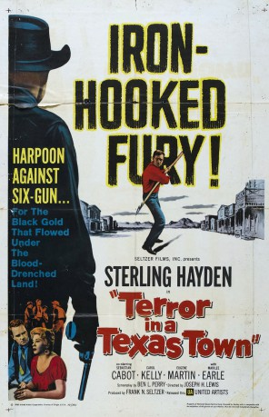
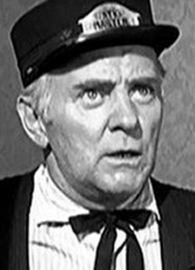

#4259 Sturm über Texas
Alternativ: Terror in a Texas Town
 
 IMDB-Wertung: 6.9 / 10
IMDB-Wertung: 6.9 / 10  Metascore: 0
Metascore: 0 
Texas, 1890: Nach langer Seefahrt kehrt Walfänger George Hansen (Sterling Hayden) in sein Heimatstädtchen zurück. Dort stellt er fest, dass sein Vater ermordet wurde, weil er sein Land nicht verkaufen wollte. Hansen schwört Rache. - Alle Achtung: Dieser Cowboy schießt mit Harpune statt mit Pistole!
Jahr: 1958
Dauer: 77 Minuten
FSK: 12
Land: USA Studio: United ArtistsTonspuren:
Untertitel:
Auflösung: 720p (1280x720) Größe: 3799 MB
Genre: Western
Regisseur: Joseph H. Lewis
Drehbuch: Alan Trustman
Soundtrack:
Darsteller:
 Sterling Hayden als George Hansen
Sterling Hayden als George Hansen Sebastian Cabot als Ed McNeil
Sebastian Cabot als Ed McNeil- Eugene Mazzola als Pepe Mirada
 Frank Ferguson als Deacon Matt Holmes
Frank Ferguson als Deacon Matt Holmes- Marilee Earle als Mona Stacey
 Byron Foulger als The Minister , uncredited
Byron Foulger als The Minister , uncredited Herman Hack als Townsman , uncredited
Herman Hack als Townsman , uncredited- Fred Kohler Jr. als Weed , uncredited
- Hank Patterson als Brady , uncredited
 Glenn Strange als Train Passenger , uncredited
Glenn Strange als Train Passenger , uncredited Jack Tornek als Townsman , uncredited
Jack Tornek als Townsman , uncredited- Carol Kelly als Molly
- Nedrick Young als Johnny Crale
- Victor Millan als Jose Mirada
- Gil Lamb als Barnaby , uncredited
- Thomas Martin als Townsman in Church , uncredited
- Tyler McVey als Sheriff Stoner , uncredited
- Steve Mitchell als Keeno , uncredited
 Kansas Moehring als Townsman , uncredited
Kansas Moehring als Townsman , uncredited- James H. Russell als Johnson , uncredited
 Jeffrey Sayre als Townsman in Church , uncredited
Jeffrey Sayre als Townsman in Church , uncredited-  Ted Stanhope als Sven Hansen , uncredited
- Ann Varela als Rosa Mirada , uncredited
 Sheb Wooley als Baxter , uncredited
Sheb Wooley als Baxter , uncredited
Datei: X:\HD-Western-1900-1959\Sturm über Texas (1958, FSK12, 1280x720).mkv seit 27.08.2016
Festplatte: HD Eastern+Western
 Es gibt insgesamt 98 Filme in der Gruppe 'HD-Western-1900-1959'
Es gibt insgesamt 98 Filme in der Gruppe 'HD-Western-1900-1959'